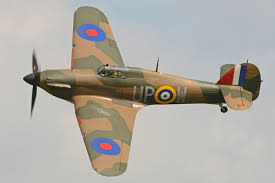
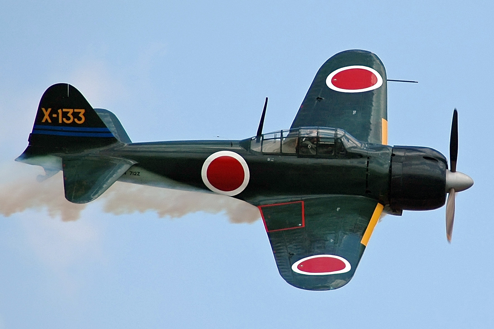
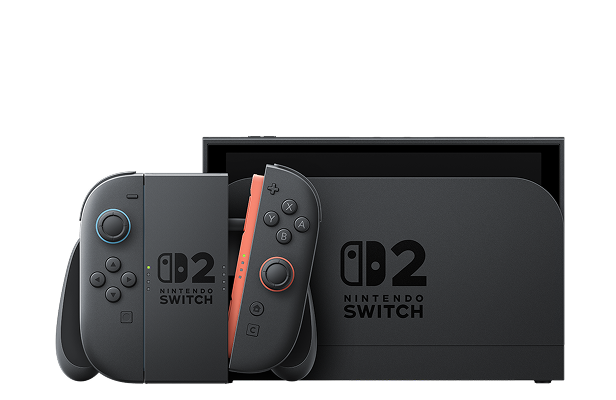

Hurricane Hawker Inicio
Inicio
Mitsubishi A6M Zero North American P-51 Mustang
North American P-51 Mustang Supermarine SpitfireJunkers Ju 87G-1 Stuka
Supermarine SpitfireJunkers Ju 87G-1 Stuka
Nintendo Switch (ニンテンドー スイッチ Nintendō Suitchi?) es una consola de videojuegos lanzada a mediados de la octava generación de consolas que fue desarrollada por Nintendo y fabricada por Foxconn. Lanzada a nivel mundial en la mayoría de las regiones el 3 de marzo de 2017, la Switch sucedió a Wii U y compitió con PlayStation 4 de Sony y Xbox One de Microsoft; también compite con las consolas de novena generación, la PlayStation 5 y Xbox Series X/S. Hurricane Hawker |
Inicio |
 Mitsubishi A6M Zero |
| North American P-51 Mustang |
Supermarine Spitfire |
Junkers Ju 87G-1 Stuka |